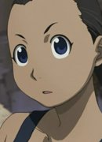

- Pokemon
- Pokemon Movie 20: I Choose You!
- Fullmetal Alchemist
- Pokemon Advanced Generations
| |
Erika |
|
|
|  | Paninya |
|
Paninya is a resident of Rush Valley. She lost both her legs and her right arm in train wreck when she was young. She is pickpocketer until talking to Winry. She later becomes Dominic's assistant. |
| Sandra |
|